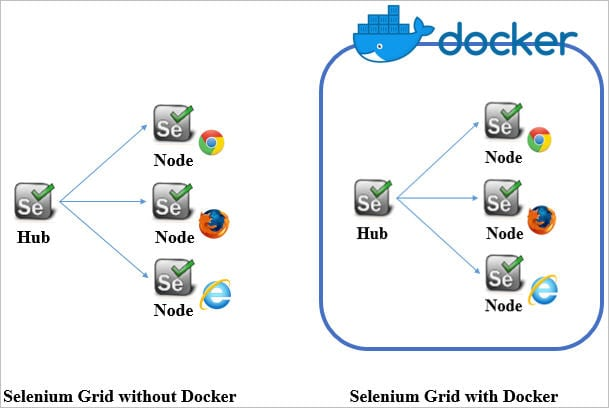

Set up Docker to run a selenium grid server on your local machine.
Selenium Grid allows us to run tests in parallel on multiple machines, and to manage different browser
versions and browser configurations centrally (instead of in each individual test).
Selenium Grid allows the execution of WebDriver scripts on remote machines (virtual or real) by routing
commands sent by the client to remote browser instances. It aims to provide an easy way to run tests in
parallel on multiple machines.
Purposes and main functionalities:
- Running tests in parallel
- Management and control of the nodes / environment where the browsers run
- Cross-platform testing
- Scaling
To be precise this article would be useful to you ...
Well you can say , this is another "5-min Craft" article for Docker Selenium Grid set up.

Steps to set up Docker Selenium Grid on your local machine.
1. Install Docker on your local
Refer Google on how to Install Docker on your local machine.
Once the installation is complete, you can now proceed to the next step.
2. Open the terminal and pull the base Selenium image from Docker Hub
docker pull selenium/hub
docker pull selenium/node-chrome-debug
docker pull selenium/node-firefox-debug
2. Create a Network
docker network create grid
3. Create a Docker container for the Selenium Hub
$ docker run -d -p 4444:4444 --net grid --name selenium-hub selenium/hub
-d : running the container in detached mode.
-p : Binding port local Machine port 4444 to container port
--net : to make the programs inside the Docker container look like they are running on the host itself, from
the perspective of the network. It allows the container greater network access than it can normally get.
--name : Naming the container
4. Create and run the Docker firefox node container
$ docker run -d --net grid -e SE_EVENT_BUS_HOST=selenium-hub \
--shm-size="2g" \
-e SE_EVENT_BUS_PUBLISH_PORT=4442 \
-e SE_EVENT_BUS_SUBSCRIBE_PORT=4443 \
-v /dev/shm:/dev/shm \
selenium/node-firefox
5. Create and run the Docker Chrome node container
$ docker run -d -P --link selenium-hub:hub --net grid -v /dev/shm:/dev/shm \
-e SE_EVENT_BUS_HOST=selenium-hub \
-e SE_EVENT_BUS_PUBLISH_PORT=4442 \
-e SE_EVENT_BUS_SUBSCRIBE_PORT=4443 \
--name node-chrome selenium/node-chrome
-e : environment variables is imp
-P : Assigns random port
Some import docker commands
$ docker ps
$ docker ps -a
$ docker stop selenium-hub
$ docker rm selenium-hub
$ docker network ls
$ docker network rm grid
$ docker network create grid
$ docker network ls
$ docker network rm grid
$ docker network ls
- do
$ docker PS - Get the port assigned to selenium-chrome-node
- And Check it in VNC
Sample Code Snippet for Test
public class DemoDocker {
@Test
public void demoTestChrome() throws MalformedURLException, InterruptedException {
try {
DesiredCapabilities cap = new DesiredCapabilities();
cap.setBrowserName(BrowserType.CHROME);
WebDriver driver = new RemoteWebDriver(new URL("http://localhost:4444"),cap);
driver.get("https://www.google.com");
System.out.println("Naviagating to Google Chrome");
driver.findElement(By.name("q"));
Thread.sleep(10000);
driver.quit();
System.out.println("Done Google Chrome");
}
catch (Exception e) {
// TODO: handle exception
e.getMessage();
}
}
}

Daipayan Sarkar
Well! I am aware this is not the perfect blog but keeping in mind the purpose I have written this post. But as and when I get time , I would making changes to this blog to bring you a complete overview of this topic.
Copyright © All rights reserved.
Leave a comment